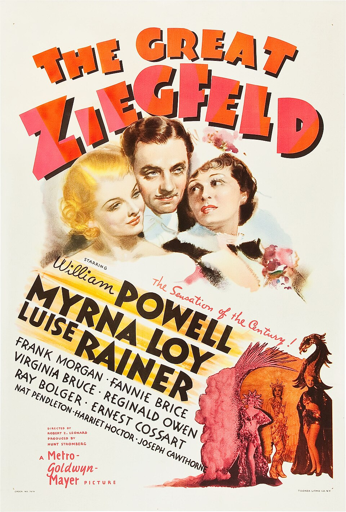

The Great Ziegfeld
9th Academy Awards
(Oscars 1937)
7 Nominations, 3 Awards
| Nominations | ||
|---|---|---|
| Category | Nominees | Result |
| Outstanding Production | Metro-Goldwyn-Mayer | Won |
| Actress | Luise Rainer | Won |
| Directing | Robert Z. Leonard | Nominated |
| Writing (Original Story) | William Anthony McGuire | Nominated |
| Film Editing | William S. Gray | Nominated |
| Art Direction | Cedric Gibbons, Eddie Imazu, and Edwin B. Willis | Nominated |
| Dance Direction "A Pretty Girl Is Like a Melody" |
Won | |